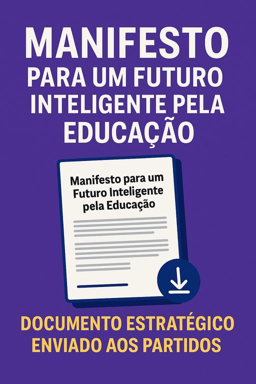

Publicado em 2025-06-20 20:24:23
Este documento, que agora partilho convosco em anexo, não é apenas uma reflexão — é um plano estruturado, com metas claras até 2035, e com ações concretas para os primeiros dois anos. Nele defendo uma revolução serena, mas inadiável no sistema educativo português: mais criatividade, pensamento crítico, literacia digital e científica, e menos burocracia e mediocridade institucional.
A cada partido, deixei claro: a educação não pode continuar a ser o parente pobre da política pública. É tempo de apostar na inteligência coletiva, nos professores inspiradores, nos alunos inquietos e nos currículos vivos. É tempo de preparar Portugal para o futuro — e não apenas para os exames do passado.
Deixo o meu contacto no documento, e aguardo, com a esperança dos lúcidos, alguma reação. Mas seja qual for a resposta política, o caminho não para por aqui. Continuarei, como sempre, a lutar por ideias, por inovação e por um país com mais luz.
Um abraço a todos os que sonham, estudam e constroem.
Francisco Gonçalves
francis.goncalves@gmail.com
Agradeço os vossos comentários e ideias, que podem registar em comentários a esta publicação. Obrigado.